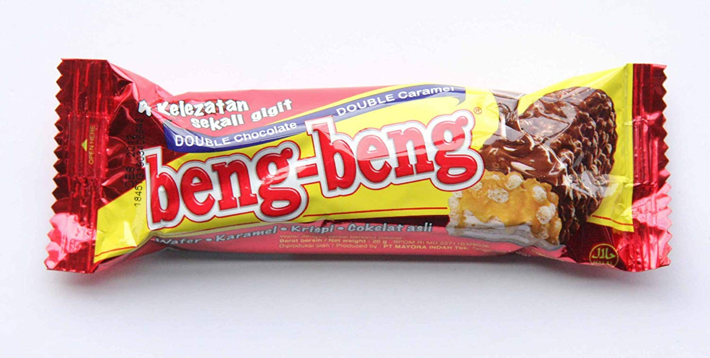

Beng - beng

Wafer coklat Beng-Beng adalah sebuah jajanan yang istimewa dari dulu sampai sekarang, wafer yang dilumuri coklat,karamel,dan krispi ini memiliki aroma yang khas serta rasa yang tak terlupakan! Wow!
Wafer coklat Beng-Beng adalah sebuah jajanan yang istimewa dari dulu sampai sekarang, wafer yang dilumuri coklat,karamel,dan krispi ini memiliki aroma yang khas serta rasa yang tak terlupakan! Wow!